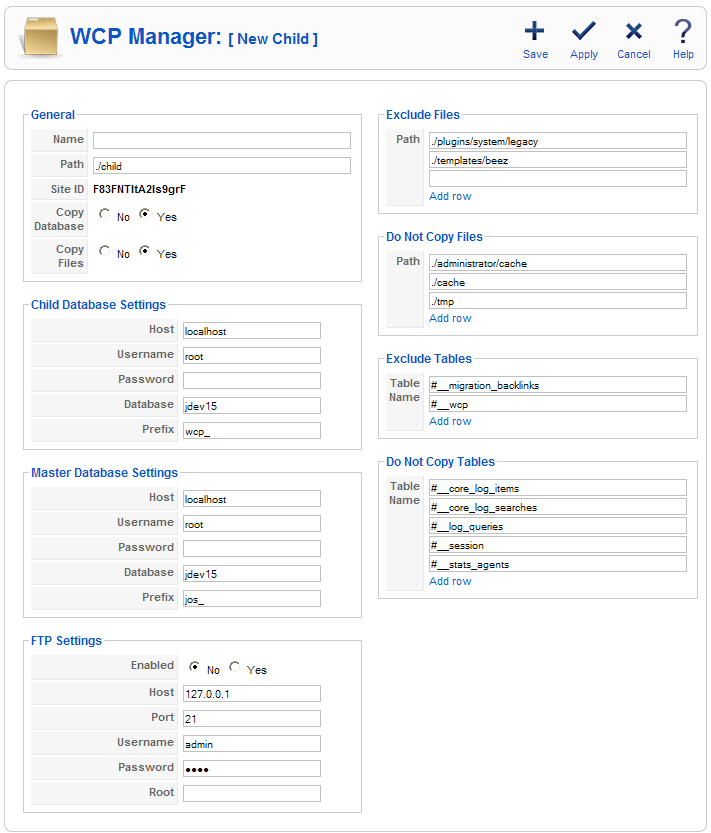
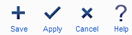

| Working Copy |
Description
Here you can create a child from your master website by filling the form on the screenshot.
Screenshot

Form Sections
General. Here you will enter the general information about the child - Name: The name of the child site.
- Path: The relative path of the child site.
- Site ID: The unique secret key of the child site, it will be generated automatically.
- Copy Database: You can specify to copy or not the master tables to the child database, use Yes if you are not sure. If you say No, you will need to create appropriate table triggers manually.
- Copy Files: If your site is big you can use this option to not copy the files to the child site, you will need to copy them manually afterwards.
Child Database Settings. Here you will need to enter the child database connection info. It will be used by the child to connect to it's database. Master Database Settings. Here you will need to enter the master database connection info. It will be used by the child to connect to the master database. FTP Settings. This setting tells Joomla! to use it's built-in FTP function instead of the normal upload process used by PHP. You can find more info about it in Joomla! Global Configuration Help. Exclude Files. The files in the exclude list will not be listed in the differences list even if you made a change on them. If you want to exclude all the files in a directory, just specify the relative path of it. Do Not Copy Files. Unless the Exclude Files list, this files will not be copied to the child site while creating it. If you specify a folder here, it will be created on the child, but the files in it will not be copied. Exclude Tables. The tables in the exclude list will not be listed in the differences list even if you made a change on them. Do Not Copy Tables. Unless the Exclude Tables list, this table rows will not be copied to the child site while creating it. Only the table structure will be added to the child.
Toolbar
At the top right you will see the toolbar:

Save. Saves and/or creates the child if doesn't exist. Apply. Saves and/or creates the child if doesn't exist and keeps the form in front of you. Cancel. Cancels unsaved changes and closes the form. Help. Opens this Help Screen.
Quick Notes
You can use the same database for the child, but the prefix should differ. If you have big folders containing multi-media files, better to add that folder to Do Not Copy Files list and then copy it manually if you need them.
|